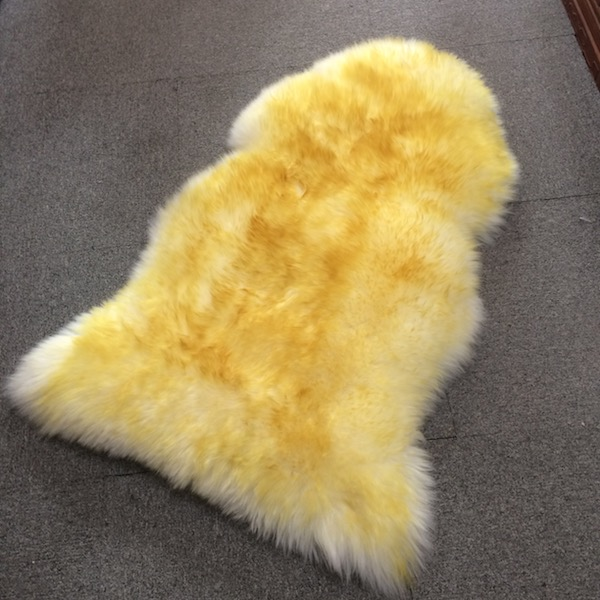

Full Sheepskin Car Seat Cover Set
$249.99
Complete set of sheepskin car seat covers. Front and back seats, headrest covers included. Premium Australian merino wool for all-season comfort.
Product Specifications
- Material: 100% Australian Merino Wool
- Size: Universal Fit (most vehicles)
- Features: Full Set, All-Season, Airbag Compatible
- Origin: Premium Australian Merino Wool
- Care: Easy Care Instructions Included
Why Choose Australian Merino Sheepskin?
Our premium Australian merino sheepskin products are carefully selected for exceptional quality and comfort. Natural wool fibers offer superior temperature regulation, are naturally hypoallergenic, and provide incredible softness. Whether for home decor, medical applications, or everyday luxury comfort, our sheepskin delivers timeless elegance and practical benefits.
Add to Cart